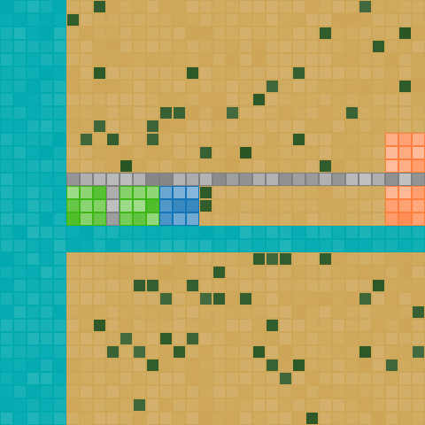

A tiny remake of Micropolis/SimCity made with Brian Moriarty's Perlenspiel. Works best in Firefox.
At the moment only the main UI works and there is no actual simulation. Use the following commands to build your city:
R to zone for residential (green);C to zone for commercial (blue);I to zone for industrial (orange);S to build streets (gray);Z to bulldoze.Click and drag to create zones, streets and bulldoze areas. Once a zone was created, a darker color means denser population (in the streets in means traffic density.)